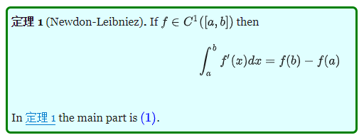

Hexo博客指南
本文最后更新于：2021年12月2日 晚上
工作中除了业务外，还需要主动对技术进行思考与挖掘。技术乃开发的立足之本，总结工作和业余的技术要点与思考，对于当下的自己，以后的自己，都是十分必要的。于当下，面向博客式地学习有利于深入理解知识点；于未来，遇到重复的工作和故障时，可以参考过去的技术博客，还可以作为简历的一部分。
Windows环境下搭建基于Hexo框架和Fluid主题的个人博客
Set up your personal blog using Hexo Framework and Fluid theme under Windows environment.
安装文件
下载并安装 Git
下载并安装Node.js
下载并解压后，必须将文件所在路径添加到系统环境变量Path中，才能在命令行中使用node和npm命令。
步骤为：控制面板->搜索->系统环境变量->环境变量(N)->用户变量->Path->编辑->新建->Node所在路径->确定
安装 Hexo
打开cmd，先输入1
$ node --version
出现版本号则说明nodejs安装成功，否则请检查环境变量是否正确添加。
安装Hexo1
$ npm install -g hexo-cli
自定义博客
初始化博客
新建一个存储博客文件的文件夹，如E:\Blog
在这个文件夹中打开cmd (于路径框中输入cmd)，输入1
2
3$ hexo init
$ npm install
$ hexo s
访问 localhost即可打开博客网站
更换配置后，建议使用clean清空后再重新启动1
$ hexo clean && hexo s
更换主题
这里选择了Fluid主题。
可以将github源文件解压到/themes路径下，然后将_config.yml创建副本并命名为_config.fluid.yml，并修改指定主题为fluid：1
theme: fluid # 指定主题
以后如果修改任何主题配置，都只需修改 _config.fluid.yml
只要存在于 _config.fluid.yml 的配置都是高优先级，修改原 _config.yml 是无效的。
每次更新主题可能存在配置变更，请注意更新说明，可能需要手动对 _config.fluid.yml 同步修改。
想查看覆盖配置有没有生效，可以通过 hexo g —debug 查看命令行输出。
如果想将某些配置覆盖为空，注意不要把主键删掉，不然是无法覆盖的。
全局配置
指博客根目录下的_config.fluid.yml
开头是# Hexo Configuration
可以配置网站标题、副标题、作者、语言、目录地址、时间戳格式、永久链接格式等
主题配置
指\themes\hexo-theme-fluid-master_config.yml
开头是# Hexo Theme Fluid
所有页面统一字体的字号和字族可以通过主题配置中的下列配置项设置：1
2
3
4font: # 主题字体配置
font_size: 16px # 全局字号
font_family: # 全局字体族，建议默认
code_font_size: 85% # 代码的字号
自定义 JS / CSS / HTML
如果想引入外部的 JS、CSS（比如 IconFont）或 HTML，可以通过以下主题配置，具体见注释：1
2
3
4
5
6
7
8
9
10
11# 指定自定义 js 文件路径，路径是相对 source 目录
custom_js: /js/custom.js
# 指定自定义 css 文件路径，路径是相对 source 目录
custom_css: /css/custom.css
# 自定义 <head> 节点中的 HTML 内容
custom_head: '<meta name="key" content="value">'
# 自定义底部 HTML 内容（位于 footer 上方），也可用于外部引入 js css 这些操作，注意不要和 post.custom 配置冲突
custom_html: '<link rel="stylesheet" href="//at.alicdn.com/t/font_1067060_qzomjdt8bmp.css">'
另外 custom_js 和 custom_css 都可以指定多个路径：1
2
3custom_css:
- /css/custom.css
- //at.alicdn.com/t/font_1736178_ijqayz9ro8k.css
页头 Header
导航栏 navbar
标题：默认使用博客配置中的 title，这个配置同时控制着网页在浏览器标签中的标题。
如需单独区别设置，可在blog_title一栏设置
菜单 menu
1 | |
key: 用于关联有多语言，如不存在关联则显示 key 本身的值
link: 跳转链接
icon: 图标的 css class，可以省略（即没有图标），主题内置图标详见这里
name: 强制使用此名称显示（不再按多语言显示），可省略
另外支持二级菜单（下拉菜单），配置写法如下：1
2
3
4
5
6
7
8
9
10menu:
- {
key: '文档',
icon: 'iconfont icon-books',
submenu: [
{ key: '主题博客', link: 'https://hexo.fluid-dev.com/' },
{ key: '配置指南', link: 'https://hexo.fluid-dev.com/docs/guide/' },
{ key: '图标用法', link: 'https://hexo.fluid-dev.com/docs/icon/' }
]
}
页脚 Footer
默认为 Hexo & Fluid链接，使用Html格式：1
2
3
4
5content: '
<a href="https://hexo.io" target="_blank" rel="nofollow noopener"><span>Hexo</span></a>
<i class="iconfont icon-love"></i>
<a href="https://github.com/fluid-dev/hexo-theme-fluid" target="_blank" rel="nofollow noopener"><span>Fluid</span></a>
'
首页 Home page
首页头图可指定本地图片或外部链接1
2
3banner_img: /img/bg/example.jpg # 对应存放在 /source/img/bg/example.jpg
banner_img: https://static.zkqiang.cn/example.jpg
首页大图中的副标题文字可指定文本，或通过API接口返回内容
如果 text 为空则按博客配置的 subtitle 显示。1
2
3
4
5
6
7
8
9slogan:
enable: true
text: 这是一条 Slogan
api:
enable: false
url: "https://v1.hitokoto.cn/"
method: "GET"
headers: {}
keys: ["hitokoto"]
API 接口获取：
url: API 地址，必须返回的是一个 JSON 格式
method: 请求方法，可选 GET、POST、PUT
headers: 请求头，如果接口需要传一些验证的头部信息，在这里设置
keys: 从请求结果获取字符串的取值字段，程序会根据列表中的字段依次取值，最终需要获得到一个字符串
例如 API 返回的内容为：1
2
3
4
5
6
7
8
9
10
11
12
13
14[
{
"data": {
"author": "Fluid",
"content": "An elegant theme"
}
},
{
"data": {
"author": "Test",
"content": "Test content"
}
}
]
设置 keys: [“data”, “content”]，程序会如下执行：
由于返回体是列表，程序会首先获取第一个元素（不是列表则跳过此步骤）
通过第一个 key data 获取值，发现不是一个字符串，继续执行
通过第二个 key content 获取值，发现是一个字符串，返回内容；如果不是字符串则获取失败，使用 text 值
文章摘要
默认开启自动摘要，取文章前三行文本，无视空行。可在auto_excerpt中关闭。
如果关闭自动摘要，并且没有设置手动摘要，摘要区域空白。1
2
3index:
auto_excerpt:
enable: true
可以手动指定摘要内容，在md文件中以如下格式填写：1
2
3上面是摘要
<!-- more -->
下面为正文
或者在md文件最开头指定excerpt字段：1
2
3
4---
title: 这是标题
excerpt: 这是摘要
---
隐藏文章
如果想把某些文章隐藏起来，不在首页、分类页、标签页里展示，可以在md文件开头中配置 hide: true 属性。1
2
3
4---
title: 文章标题
hide: true
---
隐藏后依然可以通过文章链接访问
文章排序
如果想手动将某些文章固定在首页靠前的位置，可以在安装 hexo-generator-index >= 2.0.0 版本的情况下，在md文件配置 sticky 属性：1
2
3
4---
title: 文章标题
sticky: 100
---
sticky 数值越大，该文章越靠前，达到类似于置顶的效果，其他未设置的文章依然按默认排序。
当文章设置了 sticky 后，主题会默认在首页文章标题前增加一个图标，来标识这是一个置顶文章。
文章页 Post Page
1 | |
/img/example.jpg 对应路径为 /source/img/example.jpg。
也可以使用外链 Url 的绝对路径。
如果想统一给文章设置一个默认图片（文章不设置 index_img 则默认使用这张图片），可在主题配置中设置：1
2post:
default_index_img: /img/example.jpg
文章页顶部大图默认显示主题配置中的 post.banner_img。
关于页 About page
首次使用主题的「关于页」需要手动创建：1
$ hexo new page about
创建成功后修改 /source/about/index.md，添加 layout 属性。
修改后的文件示例如下：1
2
3
4---
title: 标题
layout: about
---
layout: about 必须存在，并且不能修改成其他值，否则不会显示头像等样式。
在关于页介绍自己的基础信息和社交页图标，可以在主题配置中设置：
1 | |
class: 主题内置图标详见这里
link: 跳转链接
tip: 鼠标悬浮在图标上显示的提示文字
qrcode: 二维码图片，当使用此字段后，点击不再跳转，而是悬浮二维码
关闭 icons 时注意不要把 icons 这个 key 也一起注释，否则会被覆盖配置填充上默认值，请按照如下设置：1
2
3about:
icons:
# - { class: 'iconfont icon-github-fill', link: 'https://github.com', tip: 'GitHub' }
图标也可以通过插入 HTML 的方式用到文章内的任何地方：
其他问题可参考官方文档
Git Pages部署
安装hexo-deployer-git:1
npm install hexo-deployer-git --save
在Github创建一个新repo，命名必须为username.github.io
编辑_config.yml(或者全局覆盖的_config.fluid.yml)，在Deployment中添加：1
2
3
4
5deploy:
type: git
repo: https://github.com/<username>/<project>
# example, https://github.com/hexojs/hexojs.github.io
branch: main
注意分支名称，默认可能为master，main，gh-pages等
运行1
hexo clean && hexo deploy
可能会遇到Author identity unknown问题，解决方法如下：
输入邮箱地址，触发Git Credential Manager1
2git config --global user.email "you@example.com"
git config --global user.name "Your Name"
再次运行1
hexo clean && hexo deploy
查看 username.github.io 上的网页是否部署成功。
以后本地出现改动时，需再次运行hexo clean && hexo deploy
gitpage可能会对修改有几分钟的延迟
其他故障可参考Hexo github部署
编写文章
模板与格式
文章内容图片
文章内需要引用的图片采用如下格式：1

更好地办法是每个博文对应一个资源文件夹：1
2_config.yml
post_asset_folder: true
当资源文件管理功能打开后，Hexo将会在你每一次通过 hexo new 命令创建新文章时自动创建一个文件夹。这个资源文件夹将会有与这个文章文件一样的名字。将所有与你的文章有关的资源放在这个关联文件夹中之后，你可以通过相对路径来引用它们，这样你就得到了一个更简单而且方便得多的工作流。
例：
组图
如果想把多张图片按一定布局组合显示，你可以在 markdown 中按如下格式：1
2
3
4
5
6
7{% gi total n1-n2-... %}


{% endgi %}
total：图片总数量
n1-n2-…：每行的图片数量，可以省略，默认单行最多 3 张图，求和必须相等于 total，否则按默认样式
gi 5 3-2 代表共 5 张图，第一行 3 张图，第二行 2 张图。
脚注
主题内置了脚注语法支持，可以在文章末尾自动生成带有锚点的脚注，该功能在主题配置中默认开启。
脚注语法如下：1
2这是一句话[1]
[^1]: 这是对应的脚注
例：这是一句话[1]
更优雅的使用方式，是将脚注写在文末，比如：1
2
3
4
5正文
## 参考
[^1]: 参考资料1
[^2]: 参考资料2
折叠文字
使用了Html中summary与detail标签：1
2
3
4<details>
<summary>折叠的标题</summary>
<p>折叠的内容，可以包含代码等</p>
</details>
折叠的标题
1
2
3
4class test{
public:
test();
};
插件
便签
在 markdown 中加入如下的代码来使用便签：1
2
3{% note success %}
文字 或者 `markdown` 均可
{% endnote %}
或者使用 HTML 形式：1
<p class="note note-primary">标签</p>
可选便签：
primary-purple
secondary-gray
success-green
danger-red
warning-orange
info-blue
light-dark
行内标签
在 markdown 中加入如下的代码来使用 Label：1
{% label primary @text %}
或者使用 HTML 形式：1
<span class="label label-primary">Label</span>
可选 Label：
primary-lavender 文字
default-gray
success-light greendanger-redwarning-yellowinfo-blue
勾选框
在 markdown 中加入如下的代码来使用 Checkbox：1
{% cb text, checked?, incline? %}
text：显示的文字
checked：默认是否已勾选，默认 false
incline: 是否内联（可以理解为后面的文字是否换行），默认 false为换行
示例：
勾选不换行 321
不勾选不换行 791
按钮
可以在 markdown 中加入如下的代码来使用 Button：1
{% btn url, text, title %}
或者使用 HTML 形式：1
<a class="btn" href="url" title="title">text</a>
url：跳转链接
text：显示的文字
title：鼠标悬停时显示的文字（可选）
例：
插件 自定义博客
测试结果显示链接默认为本文内部，不能链接到外部网页。
Latex
Hexo渲染LaTeX公式关键
Hexo渲染主题的两个重要因素：mathjax和kramed
前者是数学公式渲染引擎，后者是Hexo的渲染引擎。
hexo默认渲染引擎是marked，但是它不支持mathjax，因此需要替换引擎。
添加mathjax
hexo默认安装有hexo-math,需要先卸载它。1
npm uninstall hexo-math --save
安装mathjax：1
npm install hexo-renderer-mathjax --save
hexo主题配置启用mathjax：
编辑_config.yml(或者全局覆盖的_config.fluid.yml)，在最后添加：1
2
3
4# MathJax Support
mathjax:
enable: true
per_page: true
hexo博客开启mathjax：
博客文章的开头加入mathjax:true，具体如下：1
2
3
4
5---
title:
date:
mathjax: true
---
切换kramed引擎
卸载marked引擎:1
npm uninstall hexo-renderer-marked --save
安装kramed引擎:1
npm install hexo-renderer-kramed --save
修改引擎bug
修改文件/node_modules\kramed\lib\rules\inline.js中escape和em两行，具体修改如下：1
2// escape: /^\\([\\`*{}\[\]()#$+\-.!_>])/,
escape: /^\\([`*\[\]()#$+\-.!_>])/,
这一步是在原基础上取消了对,{,}的转义(escape)。
同时把第20行的em变量也要做相应的修改。1
2// em: /^\b_((?:__|[\s\S])+?)_\b|^\*((?:\*\*|[\s\S])+?)\*(?!\*)/,
em: /^\*((?:\*\*|[\s\S])+?)\*(?!\*)/,
重新启动hexo:1
hexo clean && hexo g -d
例：
for
$R=\begin{bmatrix}
cos\theta & -sin\theta & 0 \\
sin\theta & cos\theta & 0 \\
0 & 0 & 1
\end{bmatrix},$
Eigenvalues
$\lambda_1 = cos(\theta) - i sin(\theta)$
$\lambda_2 = cos(\theta) + i sin(\theta)$
$\lambda_3 = 1$
Eigenvectors $v_1 = (-i, 1, 0)$, $v_2 = (i, 1, 0)$, $v_3 = (0, 0, 1)$
In terms of eigenvalues and eigenvectors of R, Euler’s theorem (“for every rotation there is a single line in space whose points do not move”) is restated as follows:
For every rotation R, there is a nonzero vector $\mathbf{v_3}$ where $R\mathbf{v_3} = \mathbf{v_3}$; this is due to the fact that $\mathbf{v_3}$ is an eigenvector of $R$ associated with the eigenvalue 1.
Git Pages显示Latex
Git Pages将md文件解析为html。因此本地能够显示的Latex公式在html中将不能被数学引擎翻译。
显示Latex公式的办法：
有些网站将处理程序放置在服务器上，只需在页面上传递公式的Tex表达，就会返回公式的图像，其实就是ASCIIMathTeXImg的服务器版本。
codecogs提供在线Latex服务，
91math也有类似的功能。
例如a2＋b2 的平方根，只需在网页所在位置输入以下html代码，就会返回一张该公式的图片：1
<img src="http://latex.codecogs.com/gif.latex?\sqrt{a^2+b^2}" />
此方法的缺点是生成图片不是特别清晰，且为透明底黑字，在博客暗色模式下看不清楚。
改进办法是使用颜色代码，如绿色，即可在白底与黑底均能显示：

如果耐得烦，也可以在外部输入Latex公式后进行截图，并自行选择合适的背景色：

另一种方法：在html中添加1
2<script src="https://polyfill.io/v3/polyfill.min.js?features=es6"></script>
<script id="MathJax-script" async src="https://cdn.jsdelivr.net/npm/mathjax@3/es5/tex-mml-chtml.js"></script>
但此方法所写的Latex公式不带$$，因此不能被本地数学引擎解析。使用时以\开头，并将后续公式内所有字符用括号括起来。
例：
1 | |
When (a \ne 0), there are two solutions to (ax^2 + bx + c = 0) and they are
[x = {-b \pm \sqrt{b^2-4ac} \over 2a}.]
- 这是对应的脚注 ↩
本博客所有文章除特别声明外，均采用 CC BY-SA 4.0 协议 ，转载请注明出处！